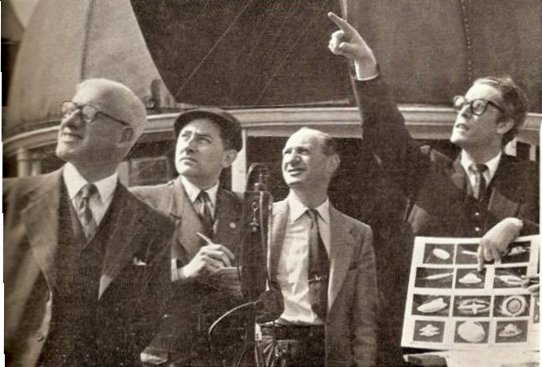

A Banning (Californie), monsieur Bierman
voit un disque fin avec un petit dôme, aux reflets argentés, stationner en vol à environ 100 yards, durant
puis s'envoler Cas Blue Book n° 4127 non résolu.
(De gauche à droite) M. Brett (venu spécialement d'Irlande), Ronald Russel et son détecteur d'ovni,
Bernard E. Finch et Desmond Leslie à l'observatoire
Hampstead de Londres le 30 FSR, juillet-août 1956

Le sergent O. D. Hill, qui travaillait pour le projet Blue Book à la base de Wright-Patterson, affirme à Tom Comella et l'ufologue Edgar Smith
que des avions de l'USAF disparaissaient de temps en temps à la suite de rencontres avec des ovnis. Pour étayer ses
affirmations, il cite en exemple 2 affaires, en omettant intentionnellement noms, lieux et dates. L'une d'elles semble être, à 1 ou 2 détails près,
celle de Kinross. Pour la 2nde, les notes
d'Egar Smith indiquent : Un avion de transport avec 26 personnes à bord approchait rapidement de sa base. Il se
trouvait à environ 16 km de la côte. A terre, dans la station radar, l'opérateur suivait l'avion de transport avec
attention et restait en contact radar constant avec lui. Soudain, l'opérateur découvrit une 2nde trace sur son
écran. Il contacta immédiatement l'avion de transport par radio et avertit le pilote de faire attention à l'engin
non identifié. L'ovni se déplaçait à très grande vitesse, environ 4000 km/h. Il sautait sur l'écran comme une balle
de tennis. Soudain, le "blip" mystérieux fila droit sur celui de l'avion de transport et, avant que l'opérateur
n'ait eu le temps d'avertir le pilote, les 2 objets n'en firent plus qu'un sur l'écran. La trace restante disparut
alors dans le ciel à une vitesse vertigineuse. les recherches ne révélèrent pas la moindre trace d'huile à la
surface de l'eau. Rien d'autre que la mallette d'un général en train de flotter. L'avion avait disparu corps et
biens"Have UFOs
"swallowed" Our Aircraft", Fate, mai 1961Le chercheur
américain Jerome E. Clark a fait remarquer que personne, ni le sergent
Hill ni l'USAF, n'avait démenti les allégations de Tom Comella.
Or, Fate est une revue connue dans l'ensemble du monde anglosaxon
et l'article avait mis nommément en cause certaines personnes..